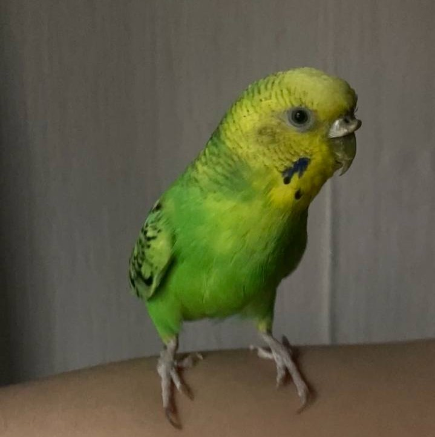

Домашние питомцы :

Моя домашняя кошка - это не просто питомец, она стала частью моей семьи.
Ее имя - Луна.
На мое 20 - летие, мои подруги решили сделать мне подарок и подарить маленький комочек счастья.
Кошка является одним из самых распространенных и популярных домашних животных по всему миру. Они возникли как домашние питомцы примерно 9 000 лет назад и с тех пор стали неотъемлемой частью жизни многих людей и моей тоже.Кошки являются весьма уникальными существами. У них есть изящное тело с гибкими и подвижными конечностями. Ушки настраиваются на звуки, поэтому кошки очень хорошо слышат. Они также имеют острое зрение, особенно в темноте, благодаря своим большим зрачкам и способности воспринимать слабый свет.
Волнистый попугай - это один из самых популярных видов домашних птиц. Они являются отличными компаньонами и могут стать настоящими друзьями своих хозяев. Мой волнистый попугай уже 6 лет и я очень люблю его. Он небольшого размера, окрашен в зеленый цвет с желтым лицом и грудкой. Его перья на голове и шее образуют красивую гриву. Он очень активен и любит играть со мной. Мы часто играем в прятки, кидаем мячик и разучиваем новые трюки. Мой попугай очень умный и общительный. Я заботлюсь о своем попугае, кормлю его специальным кормом для птиц. Мой волнистый попугай - это не просто птица, это мой друг. Ему уже 6 лет.